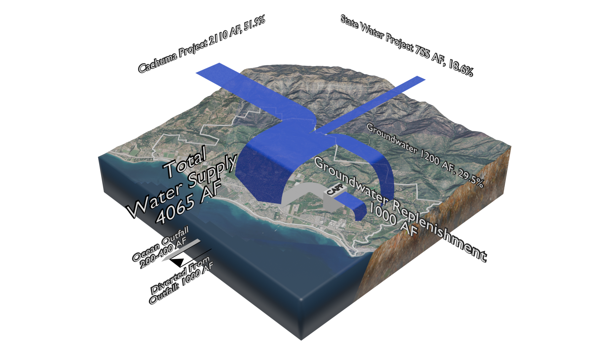

UWMP Section 5 planning scenarios for 2030 — projections, not historical actuals. Provisional communication draft — not an official CVWD publication.
Planned supply portfolio, 2030
UWMP Section 5. Projections — not historical actuals.
Three entitlements (Cachuma, State Water, and basin groundwater) do not arrive in fixed shares. Historical groundwater use ranges widely year to year, and State Water can fall sharply in a single dry year. CAPP adds about 1,000 AFY of purified water injected into the basin — basin replenishment, not a fourth surface import pipe.
The buttons below show how the post-CAPP portfolio is projected to meet 2030 demand under the three UWMP-required water-year scenarios. UWMP conclusion: CVWD expects to meet demands under all three.

assets/planning/scenario-normal.png
Projected supply, 2030 (acre-feet / year)
- Groundwater
- —
- Cachuma
- —
- State Water
- —
- Recycled (CAPP)
- —
- Supply total
- —
- Demand
- —
- Balance
- —
Source: UWMP Table 5-x · Projected · Provisional exhibit
How to read this page
Normal year is a surplus / carryover story. Single dry year shows thin State Water with CAPP and groundwater balancing. Five-year average shows thinned imports, higher groundwater, and a stable CAPP injection loop. Numbers are planning values from UWMP Tables 5-1, 5-2, and 5-4 — not Figure 4-1 historical actuals.
- CAPP project hub — public project narrative
- cvwd.net — official District materials